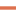
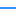

<!doctype html>
<html lang="en">
    <head>
        <meta charset="utf-8">
        <meta http-equiv="X-UA-Compatible" content="IE=edge">
        <meta name="viewport" content="initial-scale=1,user-scalable=no,maximum-scale=1,width=device-width">
        <meta name="mobile-web-app-capable" content="yes">
        <meta name="apple-mobile-web-app-capable" content="yes">
        <link rel="stylesheet" href="css/leaflet.css"><link rel="stylesheet" href="css/L.Control.Locate.min.css">
        <link rel="stylesheet" href="css/qgis2web.css"><link rel="stylesheet" href="css/fontawesome-all.min.css">
        <link rel="stylesheet" href="css/MarkerCluster.css">
        <link rel="stylesheet" href="css/MarkerCluster.Default.css">
        <link rel="stylesheet" href="css/leaflet-search.css">
        <style>
        html, body, #map {
            width: 100%;
            height: 100%;
            padding: 0;
            margin: 0;
        }
        </style>
        <title></title>
    </head>
    <body>
        <div id="map">
        </div>
        <script src="js/qgis2web_expressions.js"></script>
        <script src="js/leaflet.js"></script><script src="js/L.Control.Locate.min.js"></script>
        <script src="js/leaflet.rotatedMarker.js"></script>
        <script src="js/leaflet.pattern.js"></script>
        <script src="js/leaflet-hash.js"></script>
        <script src="js/Autolinker.min.js"></script>
        <script src="js/rbush.min.js"></script>
        <script src="js/labelgun.min.js"></script>
        <script src="js/labels.js"></script>
        <script src="js/leaflet.markercluster.js"></script>
        <script src="js/leaflet-search.js"></script>
        <script src="data/River_2.js"></script>
        <script src="data/Road_3.js"></script>
        <script src="data/Hospital_4.js"></script>
        <script>
        var highlightLayer;
        function highlightFeature(e) {
            highlightLayer = e.target;

            if (e.target.feature.geometry.type === 'LineString') {
              highlightLayer.setStyle({
                color: '#ffff00',
              });
            } else {
              highlightLayer.setStyle({
                fillColor: '#ffff00',
                fillOpacity: 1
              });
            }
        }
        var map = L.map('map', {
            zoomControl:true, maxZoom:22, minZoom:1
        })
        var hash = new L.Hash(map);
        map.attributionControl.setPrefix('<a href="https://github.com/tomchadwin/qgis2web" target="_blank">qgis2web</a> &middot; <a href="https://leafletjs.com" title="A JS library for interactive maps">Leaflet</a> &middot; <a href="https://qgis.org">QGIS</a>');
        var autolinker = new Autolinker({truncate: {length: 30, location: 'smart'}});
        L.control.locate({locateOptions: {maxZoom: 19}}).addTo(map);
        var bounds_group = new L.featureGroup([]);
        function setBounds() {
            if (bounds_group.getLayers().length) {
                map.fitBounds(bounds_group.getBounds());
            }
        }
        map.createPane('pane_GoogleHybrid_0');
        map.getPane('pane_GoogleHybrid_0').style.zIndex = 400;
        var layer_GoogleHybrid_0 = L.tileLayer('https://mt1.google.com/vt/lyrs=y&x={x}&y={y}&z={z}', {
            pane: 'pane_GoogleHybrid_0',
            opacity: 1.0,
            attribution: '<a href="https://www.google.at/permissions/geoguidelines/attr-guide.html">Map data ©2015 Google</a>',
            minZoom: 1,
            maxZoom: 22,
            minNativeZoom: 0,
            maxNativeZoom: 20
        });
        layer_GoogleHybrid_0;
        map.createPane('pane_OSMStandard_1');
        map.getPane('pane_OSMStandard_1').style.zIndex = 401;
        var layer_OSMStandard_1 = L.tileLayer('http://tile.openstreetmap.org/{z}/{x}/{y}.png', {
            pane: 'pane_OSMStandard_1',
            opacity: 1.0,
            attribution: '<a href="https://www.openstreetmap.org/copyright">© OpenStreetMap contributors, CC-BY-SA</a>',
            minZoom: 1,
            maxZoom: 22,
            minNativeZoom: 0,
            maxNativeZoom: 19
        });
        layer_OSMStandard_1;
        map.addLayer(layer_OSMStandard_1);
        function pop_River_2(feature, layer) {
            layer.on({
                mouseout: function(e) {
                    for (i in e.target._eventParents) {
                        e.target._eventParents[i].resetStyle(e.target);
                    }
                },
                mouseover: highlightFeature,
            });
            var popupContent = '<table>\
                    <tr>\
                        <th scope="row">osm_id</th>\
                        <td>' + (feature.properties['osm_id'] !== null ? autolinker.link(feature.properties['osm_id'].toLocaleString()) : '') + '</td>\
                    </tr>\
                    <tr>\
                        <th scope="row">code</th>\
                        <td>' + (feature.properties['code'] !== null ? autolinker.link(feature.properties['code'].toLocaleString()) : '') + '</td>\
                    </tr>\
                    <tr>\
                        <th scope="row">fclass</th>\
                        <td>' + (feature.properties['fclass'] !== null ? autolinker.link(feature.properties['fclass'].toLocaleString()) : '') + '</td>\
                    </tr>\
                    <tr>\
                        <th scope="row">name</th>\
                        <td>' + (feature.properties['name'] !== null ? autolinker.link(feature.properties['name'].toLocaleString()) : '') + '</td>\
                    </tr>\
                </table>';
            layer.bindPopup(popupContent, {maxHeight: 400});
        }

        function style_River_2_0() {
            return {
                pane: 'pane_River_2',
                opacity: 1,
                color: 'rgba(19,129,255,1.0)',
                dashArray: '',
                lineCap: 'round',
                lineJoin: 'round',
                weight: 2.0,
                fillOpacity: 0,
                interactive: true,
            }
        }
        map.createPane('pane_River_2');
        map.getPane('pane_River_2').style.zIndex = 402;
        map.getPane('pane_River_2').style['mix-blend-mode'] = 'normal';
        var layer_River_2 = new L.geoJson(json_River_2, {
            attribution: '',
            interactive: true,
            dataVar: 'json_River_2',
            layerName: 'layer_River_2',
            pane: 'pane_River_2',
            onEachFeature: pop_River_2,
            style: style_River_2_0,
        });
        bounds_group.addLayer(layer_River_2);
        map.addLayer(layer_River_2);
        function pop_Road_3(feature, layer) {
            layer.on({
                mouseout: function(e) {
                    for (i in e.target._eventParents) {
                        e.target._eventParents[i].resetStyle(e.target);
                    }
                },
                mouseover: highlightFeature,
            });
            var popupContent = '<table>\
                    <tr>\
                        <th scope="row">RDLNNUM</th>\
                        <td>' + (feature.properties['RDLNNUM'] !== null ? autolinker.link(feature.properties['RDLNNUM'].toLocaleString()) : '') + '</td>\
                    </tr>\
                    <tr>\
                        <th scope="row">RDLNNAMT</th>\
                        <td>' + (feature.properties['RDLNNAMT'] !== null ? autolinker.link(feature.properties['RDLNNAMT'].toLocaleString()) : '') + '</td>\
                    </tr>\
                    <tr>\
                        <th scope="row">RDLNNAME</th>\
                        <td>' + (feature.properties['RDLNNAME'] !== null ? autolinker.link(feature.properties['RDLNNAME'].toLocaleString()) : '') + '</td>\
                    </tr>\
                    <tr>\
                        <th scope="row">RDLNCLASS</th>\
                        <td>' + (feature.properties['RDLNCLASS'] !== null ? autolinker.link(feature.properties['RDLNCLASS'].toLocaleString()) : '') + '</td>\
                    </tr>\
                    <tr>\
                        <th scope="row">DIRECTION</th>\
                        <td>' + (feature.properties['DIRECTION'] !== null ? autolinker.link(feature.properties['DIRECTION'].toLocaleString()) : '') + '</td>\
                    </tr>\
                    <tr>\
                        <th scope="row">LENGTH</th>\
                        <td>' + (feature.properties['LENGTH'] !== null ? autolinker.link(feature.properties['LENGTH'].toLocaleString()) : '') + '</td>\
                    </tr>\
                    <tr>\
                        <th scope="row">RDLNTYPE</th>\
                        <td>' + (feature.properties['RDLNTYPE'] !== null ? autolinker.link(feature.properties['RDLNTYPE'].toLocaleString()) : '') + '</td>\
                    </tr>\
                </table>';
            layer.bindPopup(popupContent, {maxHeight: 400});
        }

        function style_Road_3_0() {
            return {
                pane: 'pane_Road_3',
                opacity: 1,
                color: 'rgba(222,112,78,1.0)',
                dashArray: '',
                lineCap: 'butt',
                lineJoin: 'miter',
                weight: 5.0,
                fillOpacity: 0,
                interactive: true,
            }
        }
        map.createPane('pane_Road_3');
        map.getPane('pane_Road_3').style.zIndex = 403;
        map.getPane('pane_Road_3').style['mix-blend-mode'] = 'normal';
        var layer_Road_3 = new L.geoJson(json_Road_3, {
            attribution: '',
            interactive: true,
            dataVar: 'json_Road_3',
            layerName: 'layer_Road_3',
            pane: 'pane_Road_3',
            onEachFeature: pop_Road_3,
            style: style_Road_3_0,
        });
        bounds_group.addLayer(layer_Road_3);
        map.addLayer(layer_Road_3);
        function pop_Hospital_4(feature, layer) {
            layer.on({
                mouseout: function(e) {
                    for (i in e.target._eventParents) {
                        e.target._eventParents[i].resetStyle(e.target);
                    }
                },
                mouseover: highlightFeature,
            });
            var popupContent = '<table>\
                    <tr>\
                        <th scope="row">NAME</th>\
                        <td>' + (feature.properties['NAME'] !== null ? autolinker.link(feature.properties['NAME'].toLocaleString()) : '') + '</td>\
                    </tr>\
                    <tr>\
                        <th scope="row">LAT</th>\
                        <td>' + (feature.properties['LAT'] !== null ? autolinker.link(feature.properties['LAT'].toLocaleString()) : '') + '</td>\
                    </tr>\
                    <tr>\
                        <th scope="row">LON</th>\
                        <td>' + (feature.properties['LON'] !== null ? autolinker.link(feature.properties['LON'].toLocaleString()) : '') + '</td>\
                    </tr>\
                </table>';
            layer.bindPopup(popupContent, {maxHeight: 400});
        }

        function style_Hospital_4_0() {
            return {
                pane: 'pane_Hospital_4',
                radius: 8.0,
                opacity: 1,
                color: 'rgba(61,128,53,1.0)',
                dashArray: '',
                lineCap: 'butt',
                lineJoin: 'miter',
                weight: 2.0,
                fill: true,
                fillOpacity: 1,
                fillColor: 'rgba(77,225,61,1.0)',
                interactive: true,
            }
        }
        map.createPane('pane_Hospital_4');
        map.getPane('pane_Hospital_4').style.zIndex = 404;
        map.getPane('pane_Hospital_4').style['mix-blend-mode'] = 'normal';
        var layer_Hospital_4 = new L.geoJson(json_Hospital_4, {
            attribution: '',
            interactive: true,
            dataVar: 'json_Hospital_4',
            layerName: 'layer_Hospital_4',
            pane: 'pane_Hospital_4',
            onEachFeature: pop_Hospital_4,
            pointToLayer: function (feature, latlng) {
                var context = {
                    feature: feature,
                    variables: {}
                };
                return L.circleMarker(latlng, style_Hospital_4_0(feature));
            },
        });
        var cluster_Hospital_4 = new L.MarkerClusterGroup({showCoverageOnHover: false,
            spiderfyDistanceMultiplier: 2});
        cluster_Hospital_4.addLayer(layer_Hospital_4);

        bounds_group.addLayer(layer_Hospital_4);
        cluster_Hospital_4.addTo(map);
        var baseMaps = {};
        L.control.layers(baseMaps,{' Hospital': cluster_Hospital_4,' Road': layer_Road_3,' River': layer_River_2,"OSM Standard": layer_OSMStandard_1,"Google Hybrid": layer_GoogleHybrid_0,}).addTo(map);
        setBounds();
        map.addControl(new L.Control.Search({
            layer: cluster_Hospital_4,
            initial: false,
            hideMarkerOnCollapse: true,
            propertyName: 'NAME'}));
        document.getElementsByClassName('search-button')[0].className +=
         ' fa fa-binoculars';
        resetLabels([layer_River_2,layer_Road_3]);
        map.on("zoomend", function(){
            resetLabels([layer_River_2,layer_Road_3]);
        });
        map.on("layeradd", function(){
            resetLabels([layer_River_2,layer_Road_3]);
        });
        map.on("layerremove", function(){
            resetLabels([layer_River_2,layer_Road_3]);
        });
        </script>
    </body>
</html>
